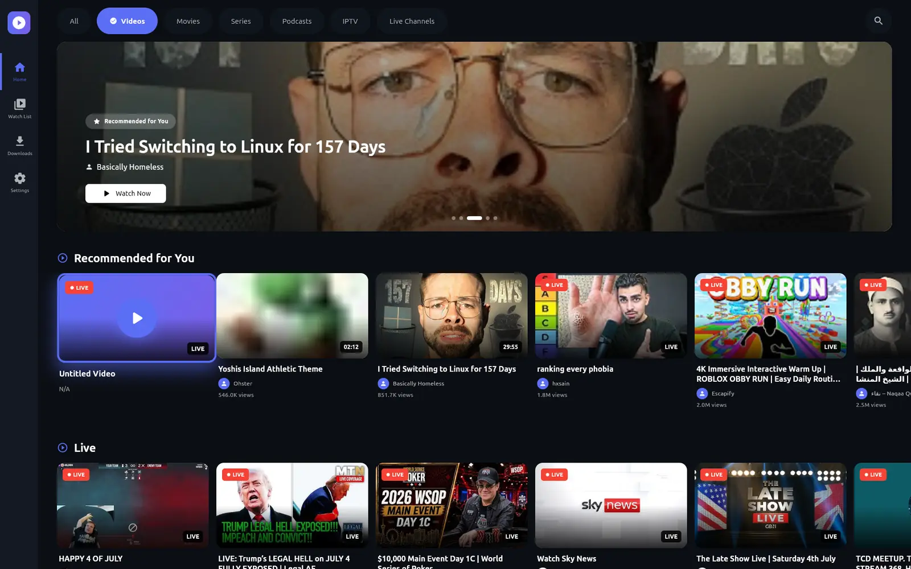
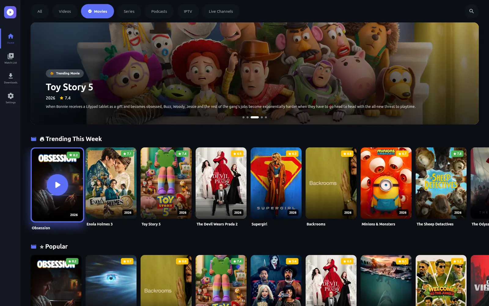
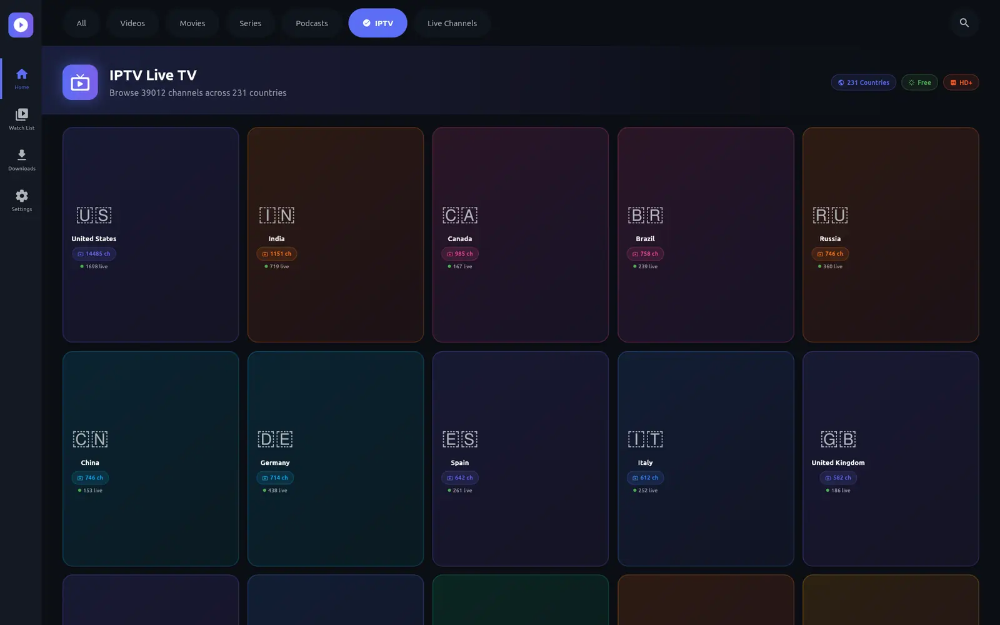
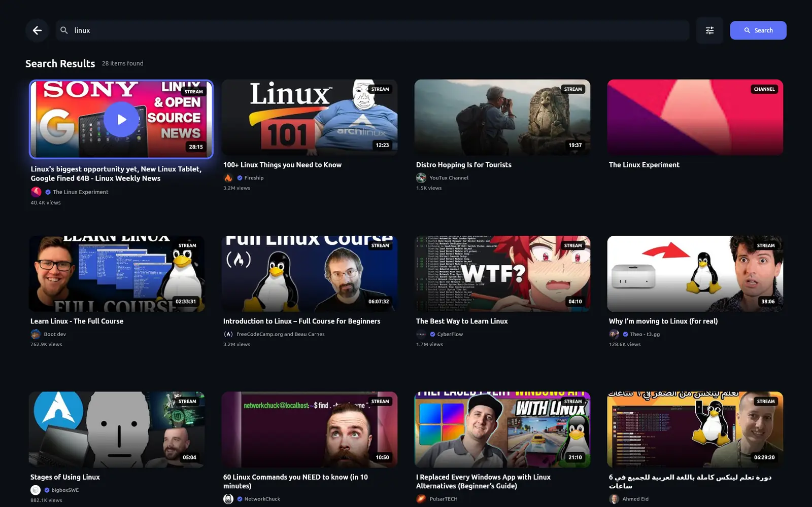
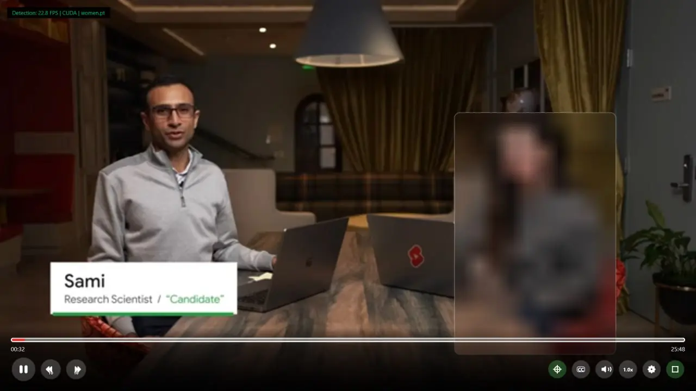

01
Unified Streaming System
A single streaming app and video player that pulls in content from many providers through plugins. The user sees one consistent catalogue, with no ads and recommendations computed on the device.
- Plugin-based sources: YouTube, SoundCloud, PeerTube, PodcastIndex, IPTV, RSS, radio, ActivityPub and local media
- Universal player for local files, online video, audio and live streams
- Custom playlists, downloads, and whitelisting and blacklisting of channels and topics
- Real-time, frame-by-frame computer vision filter that blurs inappropriate or violent content during playback
- Text classification model that filters titles and search results
- Streaming Service
- Streaming App
- Video Player
- CV models
- Text classifier
Built with Flutter · BLoC · media_kit · ONNX Runtime · Kotlin · NewPipeExtractor · YOLOv8




